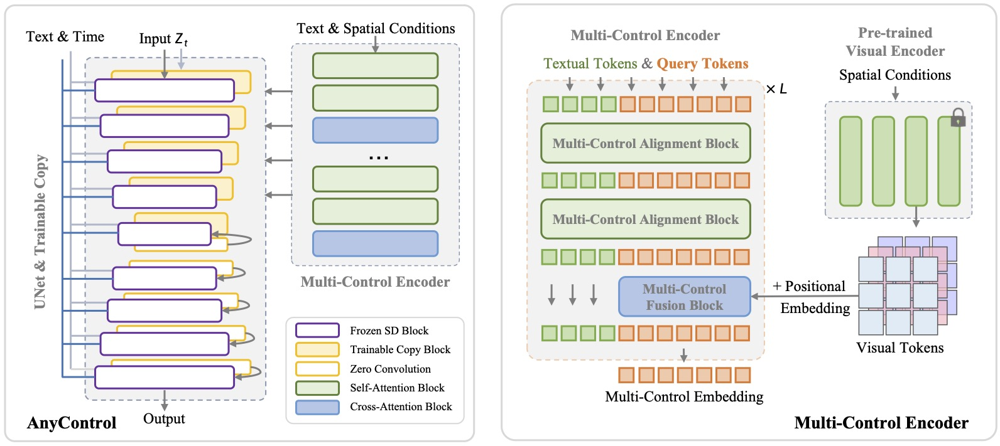

AnyControl: Create Your Artwork with Versatile Control
on Text-to-Image Generation
(Accepted by ECCV2024)

Let us create your artworks under versatile control in any free combination.
[Arxiv] [Code] [Model Card] [Benchmark] [BibTeX]
[Arxiv] [Code] [Model Card] [Benchmark] [BibTeX]
The field of text-to-image (T2I) generation has made significant progress in recent years, largely driven by advancements in diffusion models. Linguistic control enables effective content creation, but struggles with fine-grained control over image generation. This challenge has been explored, to a great extent, by incorporating additional user-supplied spatial conditions, such as depth maps and edge maps, into pre-trained T2I models through extra encoding. However, multi-control image synthesis still faces several challenges. Specifically, current approaches are limited in handling free combinations of diverse input control signals, overlook the complex relationships among multiple spatial conditions, and often fail to maintain semantic alignment with provided textual prompts. This can lead to suboptimal user experiences. To address these challenges, we propose AnyControl, a multi-control image synthesis framework that supports arbitrary combinations of diverse control signals. AnyControl develops a novel Multi-Control Encoder that extracts a unified multi-modal embedding to guide the generation process. This approach enables a holistic understanding of user inputs, and produces high-quality, faithful results under versatile control signals, as demonstrated by extensive quantitative and qualitative evaluations.
AnyControl supports free combination of versatile control signals, which develops a Multi-Control Encoder that enables holistic understanding of multi-modal user inputs. We achieve this through employing alternating multi-control fusion and alignment blocks united by a set of query tokens.

We first send all spatial control signals into the Multi-Control Encoder for extracting comprehensive multi-control embeddings according to textual prompts. The multi-control embeddings are then utilized to guide the generation process. The Multi-Control Encoder is driven by alternate multi-control fusion and alignment blocks, with query tokens defined to aggregate the compatible information from textual tokens as well as the visual tokens of the spatial conditions.
@misc{sun2024anycontrol,
title={AnyControl: Create Your Artwork with Versatile Control on Text-to-Image Generation},
author={Sun, Yanan and Liu, Yanchen and Tang, Yinhao and Pei, Wenjie and Chen, Kai},
booltitle={ECCV}
year={2024}
}
Our project page is borrowed from PhotoMaker.